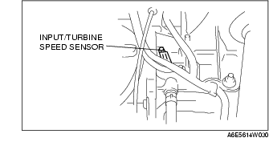

Input/turbine speed sensor removal/installation [FN4A-EL]
1. Disconnect the negative battery cable.
2. Remove the battery, battery tray and battery tray bracket.
3. Disconnect the input/turbine speed sensor connector.

4. Remove the input/turbine speed sensor.
5. Apply ATF to a new O-ring and install it on the input/turbine speed sensor.
6. Install the input/turbine speed sensor.
Tightening torque7. Connect the input/turbine speed sensor connector.
8. Install the battery tray bracket, battery tray and battery.
9. Connect the negative battery cable.